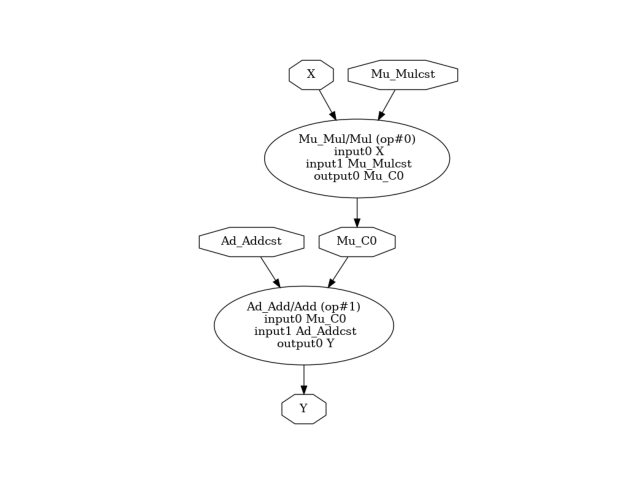

Note
Click here to download the full example code or to run this example in your browser via Binder
Draw a pipeline¶
There is no other way to look into one model stored in ONNX format than looking into its node with onnx. This example demonstrates how to draw a model and to retrieve it in json format.
Retrieve a model in JSON format¶
That’s the most simple way.
import skl2onnx
import onnxruntime
import sklearn
import numpy
import matplotlib.pyplot as plt
import os
from onnx.tools.net_drawer import GetPydotGraph, GetOpNodeProducer
from onnx import ModelProto
import onnx
from skl2onnx.algebra.onnx_ops import OnnxAdd, OnnxMul
onnx_fct = OnnxAdd(
OnnxMul('X', numpy.array([2], dtype=numpy.float32),
op_version=12),
numpy.array([[1, 0], [0, 1]], dtype=numpy.float32),
output_names=['Y'], op_version=12)
X = numpy.array([[4, 5], [-2, 3]], dtype=numpy.float32)
model = onnx_fct.to_onnx({'X': X}, target_opset=12)
print(model)
filename = "example1.onnx"
with open(filename, "wb") as f:
f.write(model.SerializeToString())
Out:
ir_version: 7
producer_name: "skl2onnx"
producer_version: "1.11"
domain: "ai.onnx"
model_version: 0
graph {
node {
input: "X"
input: "Mu_Mulcst"
output: "Mu_C0"
name: "Mu_Mul"
op_type: "Mul"
domain: ""
}
node {
input: "Mu_C0"
input: "Ad_Addcst"
output: "Y"
name: "Ad_Add"
op_type: "Add"
domain: ""
}
name: "OnnxAdd"
initializer {
dims: 1
data_type: 1
float_data: 2.0
name: "Mu_Mulcst"
}
initializer {
dims: 2
dims: 2
data_type: 1
float_data: 1.0
float_data: 0.0
float_data: 0.0
float_data: 1.0
name: "Ad_Addcst"
}
input {
name: "X"
type {
tensor_type {
elem_type: 1
shape {
dim {
}
dim {
dim_value: 2
}
}
}
}
}
output {
name: "Y"
type {
tensor_type {
elem_type: 1
shape {
dim {
dim_value: 2
}
dim {
dim_value: 2
}
}
}
}
}
}
opset_import {
domain: ""
version: 12
}
Draw a model with ONNX¶
We use net_drawer.py included in onnx package. We use onnx to load the model in a different way than before.
We convert it into a graph.
pydot_graph = GetPydotGraph(model.graph, name=model.graph.name, rankdir="TB",
node_producer=GetOpNodeProducer("docstring"))
pydot_graph.write_dot("graph.dot")
Then into an image
os.system('dot -O -Tpng graph.dot')
Out:
0
Which we display…
Out:
(-0.5, 389.5, 602.5, -0.5)
Versions used for this example
print("numpy:", numpy.__version__)
print("scikit-learn:", sklearn.__version__)
print("onnx: ", onnx.__version__)
print("onnxruntime: ", onnxruntime.__version__)
print("skl2onnx: ", skl2onnx.__version__)
Out:
numpy: 1.22.1
scikit-learn: 1.1.dev0
onnx: 1.11.0
onnxruntime: 1.11.0+cpu
skl2onnx: 1.11
Total running time of the script: ( 0 minutes 0.801 seconds)